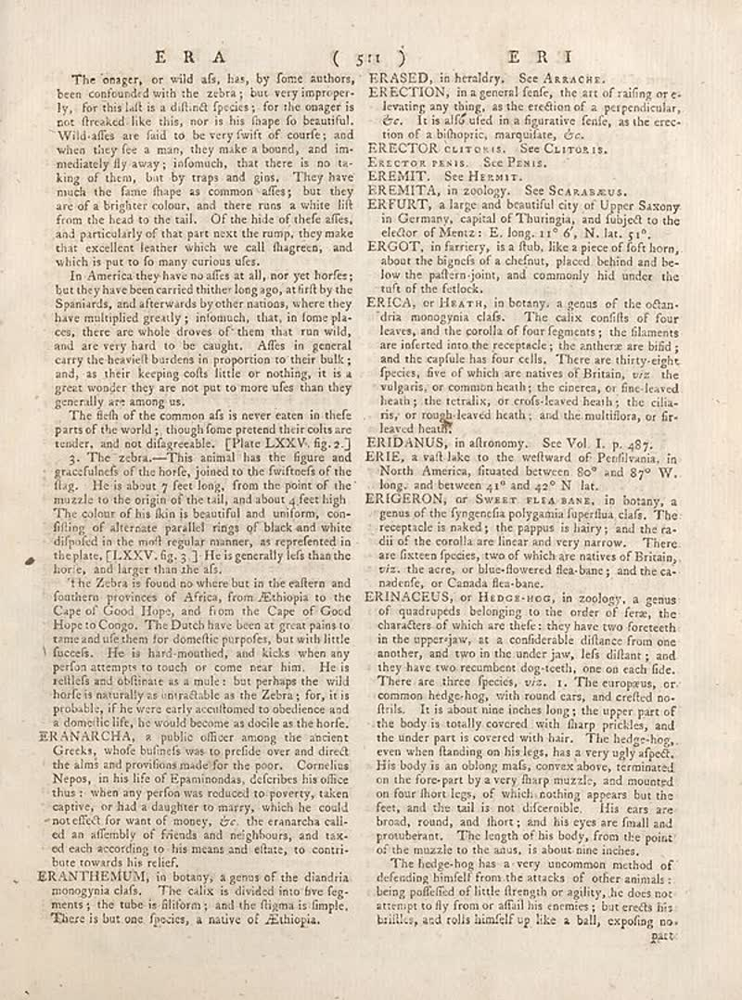

page-2473-b849fb7f25f2.jpg

Page ID: britannica:309f765b1ecc83e0a7f7762e44b4a927a7555443:train:2473
Running head:
Image SHA-256: b849fb7f25f25b39685069d12c13b17d47169beeea958446bdff439c230a0f65

(untitled) [?]
The onager, or wild afs, has, by fome authors, been confounded with the zebra; but very improperly, for this latit is a distinct species. for the onager is not freeskall for this, now is his shape of favourite. "Wild also are fail to be very twift of course’s and when they fee a man, they make a bound, and im- medically fly away; I donuts, that there is no is king of them, but by vraps and guns. They have much the fame these as common affes; but they are of a brighter colour, and there runs a white lift from the head to the tail. Of the hides of theirs, and particularly of that part next the runny, they make that excellent leather which we call flagreen, and which is putto fo many curious uses. In America they have nooffs at all, nor yet horles; but they have been carried thither long ago, atift by the Spaniards, and afterwards byother nations, where they have multiple greatly; ionomisch, that, in fome places, there are whole drows of them that run wild, and are very hard to be caught. Afes in general carry the bloodwell borders in proportion to their bulk; and, a their keeping coll little or nothing, it is a great wonder they are not put to more ufes than they generally are among us. The flesh of the common afs is never eaten in thefe parts of the world; though home pretend their colts are tender, and not difagreeable. [Plate LXXV. fig.2] 5: The idea—This animal has the figure and gracefulness of the horse, claimed to the firstness of the flag. He is about 7 feet long, from the point of the muzzle to the origin of the tall, and about, feet high. The colon of his him is beautiful and uniform, con- filing of alternate parallel rings of black and white dipuled in the melt regular manner, as reprefeden in the place, lEXXY, fig.3]. He is generally left than the horse, and larger than the afsl. ‘the Zebra is found no where but in the others and fourteen provinces of Africa, New Ethiopia to the Cape of Good Hope, and from the Cape of Good Hope to Congo. The Dutch have been at great pains to tame and die them for domestic purposes, but with little friends. He is in half monthock, and kicks when any person attempts to touch or come near him. He is scellle and oblitiare as a multe : but perhaps the wild holde is naturally as unsuitable as the Zebra; for, it is probably. If were early occultured to obdelense and a domelie life, he would become as docile as the horle.
Matched article: Grace Mildmay (Wikipedia, revision 1340936259, re-rank score -4.24609375) · comparison
ERANARCHIA [Text]
ERANARCHIA, a public officer among the ancient Greek, which bullets was to pedide over and direct the alms and provins made for the poor. Cornelius Nepos, in his lit of Espainindodas, deferibes his office thus; when any period was reduced so poverty, taken captive, or had a daughter to marry, which he could not effect for want of money, etc. the eranarcha call- ed an offender of friends and neighbours, and tax- ed each according to his means and ethars, to contri- bute towards his relief.
ERANTHEUMUJ [Text]
ERANTHEUMUJ, in botany; a genus of the diandria, menogyalda. The coloris its divided into five tag- ments if the tribe is filomn y and the flagan is limple. There is but one facies, a native of Ethiopia.
ERASED [Text]
ERASED, in heraldry. See ARRACHE.
Matched article: Erased (Wikipedia, revision 1346597079, re-rank score -2.91015625) · comparison
RECTION [Text]
RECTION, in a general fence, the art of railing or e- levating any thing, as the creation of a perpendicular, or. It is all collected in a figurative leafe, as the creo- tion of a abhorgic, inauguralus, etc.
REECTOR CLITORIS [Text]
REECTOR CLITORIS. See ClUTORIS.
Matched article: Clitoral erection (Wikipedia, revision 1347277142, re-rank score -3.583984375) · comparison
REKCTOR PISIS [Text]
REKCTOR PISIS. See FISIS.
REBMIT [Text]
REBMIT. See HEMIT.
REBMITA [Text]
REBMITA, in ecology. See SCARASRUS.
ERFURT [Text]
ERFURT, a large and beautiful city of Upper Saxony in Germany, capital of Thailand, and subject to the elckor of Menus; E. long.117 é', N.lax. 910.
ERGOT [Text]
ERGOT, in farriers, is a flub, like a piece of loft horn, about the biguns of a chefut, placed behind and be low the pattern join, and commonly hide under the tufi of the fetlock.
ERICA [Text]
ERICA, or Hearth, in benny, a genus of the other- dirina nonogona clade. The calise conflict of four leaves, and the corolla of four fragments; the filaments are infected into the receptacle; the anthem are bid; and the copilole has four cells. Three thirty eight-species, one of which are native of Britain, viz. the vulgaris, or common health; the cinerers, or fine-leaved hearts; the retraix, or crofs-leaved heads; the cilla- ray, or rough leaved heat; and the multidots, or fir- leaved heart.
ERIDANUS [Text]
ERIDANUS, in altonomy. See Vol. I. p. 487.
Matched article: Eridanos (Athens) (Wikipedia, revision 1338199480, re-rank score -4.16015625) · comparison
ERRI [Text]
ERRI, a wall take to the wellhead of Penfilivana, in North America, finances between 80^ and 89^ W. long. and between 41^ and 42^ N lat.
ERGGERON [Text]
ERGGERON, or SWART PISTA BANS, in botany, a genus of the flygregering polyanthus/perchia clad. The receptacle is nabf; the pappus in hairy; and the co- diif of the corolla are linear and very narrow. There are sixteen species, and which are native of Britain, viz. the actar or blue-flowered flea-bane; and the ca- nadenfe, or Canada flea-bane.
ERNIACEUS [Text]
ERNIACEUS, or Harca dosc in biology, a genus of arthropods belonging to the order of ferns, the characters of which are thefel; they have two foresteeth in the upperpaw, at a considerable distance from one another, and won in the under jaw. leaf claffant; and they have two recombinant dog-tetth, one on each file. There are three facies, viz. 1. The europeus, or common hedgehog, with round cars, and certified no-frilk. It is about nine inches than the year of the body is usually covered with flap prticles, and the under part is covered with hair. The hedge-hog, even when flanked on hijings, has a very ugly affect. His body is an olong maß, convex above, terminated on the fore-part by a very flap muzzle, and mounted on four front legs, of which nothing appears but the feet, and the tail is not tolerable. His ears are broad, round, and short; and his eyes are small and prouberant. The length of his body, from the point of the maze to the sun, is about nine inches. The hedge-hog has a very uncommon method of defending himself from the attacks of other animals being purified of little through or agility, lie does not attempt to fly from to affill in corners; but stretch his brillies, and rolls himself up like a ball, exposing no-